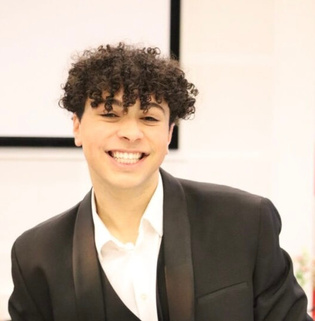

Jeg kombinerer økonomi og IT for at løse virksomheders konkrete problemer.
Økonomi & IT-studerende på Erhvervsakademi København, 4. semester. Her er de projekter, jeg har lavet med virksomheder som Røde Kors, Norlys, Politiken og ista.
Udvalgte projekter
Alle projekter er lavet i grupper på 5–6 studerende i samarbejde med rigtige virksomheder. Klik på et projekt for at se udfordring, løsning og resultat.
Røde Kors: salgsoverblik til frivillige butikker
3. semester, 2026En Power Apps-løsning, der henter webshopdata fra Shopify og viser butikkerne deres salg.
Røde Kors: salgsoverblik til frivillige butikker
3. semester, 2026En Power Apps-løsning, der henter webshopdata fra Shopify og viser butikkerne deres salg.
Udfordringen
Røde Kors' webshop omsætter for over 2,4 mio. kr. om året, men de 267 butikker kunne kun se deres samlede månedsomsætning. De vidste ikke, hvilke varer der solgte bedst, og kunne ikke sammenligne sig med hinanden.
Det gjorde vi
- Kortlagde webshopprocessen fra donation til levering i BPMN og fandt, hvor den skaber værdi og spild.
- Tegnede dataflowet før og efter løsningen (DFD as-is og to-be).
- Byggede et Power Automate-flow, der henter data fra Shopify, og en Power Apps-app med omsætning, antal solgte varer, diagrammer og bestsellere pr. butik og periode.
- Planlagde kvalitetssikring med rollebaseret adgang, datavalidering og brugertest med frivillige.
Resultat
En fungerende løsning, som vi demonstrerede for Røde Kors. Den gør rå salgstal til et overblik, som frivillige uden teknisk baggrund kan bruge.
ista: AI-agent til montører
4. semester, 2026 (igangværende)Et koncept for en AI-agent, der giver montører stemmestyret vejledning ud fra godkendt dokumentation.
ista: AI-agent til montører
4. semester, 2026 (igangværende)Et koncept for en AI-agent, der giver montører stemmestyret vejledning ud fra godkendt dokumentation.
Udfordringen
ista's tekniske viden ligger spredt i dokumentation, og montørerne har brug for den rigtige vejledning, mens de står med opgaven og ofte ikke har hænderne fri.
Det gjorde vi
- Analyserede ista's forretningsmodel og hvor langt de er fra digitalisering til egentlig digital transformation.
- Designede dataflowet: godkendte manualer i SharePoint, et revisionsmodul med version og ejer, en Copilot-agent og et dashboard med brug og feedback.
- Byggede en kontrolmekanisme ind, så uklare spørgsmål sendes videre til en fagperson (human-in-the-loop).
- Afgrænsede prototypen til én målertype og ét installationsflow.
Resultat
Et afgrænset koncept med klare hypoteser, som prototypen skal teste i næste fase.
Norlys: trivselsværktøj til sælgere
3. semester, 2026Business case, budget og klikbar prototype for et værktøj, der fanger stress tidligt.
Norlys: trivselsværktøj til sælgere
3. semester, 2026Business case, budget og klikbar prototype for et værktøj, der fanger stress tidligt.
Udfordringen
Sælgerne hos Norlys arbejder i op til fem systemer pr. kunde, hvilket gør salget langsomt og skaber stress. Der fandtes ikke et værktøj til at følge trivslen løbende.
Det gjorde vi
- Designede en tilføjelse, der kan bygges ind uden at røre Norlys' igangværende systemintegration: daglig trivselsevaluering, salgsråd, kontakt til kolleger og besked til lederen ved stress.
- Lagde et budget for udvikling, GDPR-rådgivning, kurser, pilottest og drift.
- Beregnede, hvad én stresssygemelding koster pr. måned i sygedagpenge og tabt salg.
- Byggede en klikbar prototype i Figma og pitchede løsningen.
Resultat
443.500 kr. i engangsinvestering og ca. 39.000 kr. om året i drift, sat over for et estimeret tab på 109.460 kr. for hver måned en sælger er sygemeldt med stress.
Satair: hurtigere svar på supporthenvendelser
2. semester, 2025Cost-benefit-analyse af en feedbackløsning til et flyreservedelsfirma.
Satair: hurtigere svar på supporthenvendelser
2. semester, 2025Cost-benefit-analyse af en feedbackløsning til et flyreservedelsfirma.
Udfordringen
Mange af Satairs supporthenvendelser (over 1.000 om dagen) manglede vigtige oplysninger. Det gav forsinkelser, også når et fly stod stille og ventede på en reservedel.
Det gjorde vi
- Sammenlignede en integreret kontaktformular med Hotjar-surveys og valgte formularen, fordi den giver bedre data og kobler direkte til Freshdesk.
- Lavede en cost-benefit-analyse ved forskellige grader af forbedring.
- Planlagde udviklingen med en work breakdown structure.
Resultat
184,8 % ROI ved blot 2 % forbedring og over 2.000 % ved 15 %. Løsningen blev ikke afprøvet i praksis, så tallene er estimater.
Politiken Pulse: yngre læsere og digital modenhed
3. semester, 2026To konsulentrapporter og en modenhedsanalyse for JP/Politikens Hus.
Politiken Pulse: yngre læsere og digital modenhed
3. semester, 2026To konsulentrapporter og en modenhedsanalyse for JP/Politikens Hus.
Udfordringen
Unge mangler hverken interesse for nyheder eller betalingsvilje, men Politikens digitale tilbud matcher ikke deres forventninger til fællesskab, personalisering og anonymitet.
Det gjorde vi
- Vurderede Politikens modenhed inden for data og analytics med Kræmmergaards modenhedstrappe og placerede dem i generation 4.
- Udviklede Politiken Pulse, et debat- og communityunivers, gennem en Design Thinking-proces.
- Lavede skærmbilleder i Figma Make og beskrev, hvordan konceptet kan bygge på den eksisterende datainfrastruktur.
- Analyserede implementering og drift efter omstruktureringen i 2026.
Resultat
En anbefaling om, at den største opgave er at bygge en ny brugeroplevelse oven på eksisterende systemer, ikke at bygge datafundamentet forfra.
Peytz: integration efter et opkøb
2. semester, 2025Analyse af, hvordan Peytz kan blive en del af iO, og en teknisk test af integration til Jira.
Peytz: integration efter et opkøb
2. semester, 2025Analyse af, hvordan Peytz kan blive en del af iO, og en teknisk test af integration til Jira.
Udfordringen
Efter opkøbet havde Peytz spredte systemer, kulturforskelle og en integration på pause, hvilket skabte usikkerhed blandt medarbejderne.
Det gjorde vi
- Fandt organisatoriske skævheder med McKinsey 7S og vurderede videndeling med Knowledge Management Maturity Model.
- Brugte Kotters 8 trin til at vurdere forandringsprocessen.
- Testede API-kald til Jira i Postman som proof of concept.
Resultat
Integrationen var teknisk mulig. De største barrierer var organisatoriske: styring, fælles platforme, dokumentationsstandarder og kommunikation.
DR Daglig: hackathon
3. semester, 2026Et koncept, der skal gøre DR til en daglig digital vane for unge, udviklet under tidspres.
DR Daglig: hackathon
3. semester, 2026Et koncept, der skal gøre DR til en daglig digital vane for unge, udviklet under tidspres.
Udfordringen
DR vil nå halvdelen af danskerne digitalt hver dag, men når ikke de unge på de platforme, de bruger dagligt.
Det gjorde vi
- Valgte 15–24-årige, der sjældent bruger DR, som primær målgruppe.
- Udviklede DR Daglig: korte, personaliserede klip, en daglig notifikation og en vej fra TikTok og Instagram ind til DR's egne platforme.
- Beskrev brugerrejsen og koblede konceptet til DR's tre strategiske mål med konkrete KPI'er.
Øvrige projekter
Om mig

Jeg læser Økonomi & IT på Erhvervsakademi København og søger praktik, hvor jeg kan bruge både forretningsforståelse og digitale værktøjer.
Ved siden af studiet har jeg flere års erfaring med salg, kundeservice og logistik, bl.a. som sælger i hvidevareafdelingen hos Power. Det har lært mig at lytte til, hvad folk faktisk har brug for, før man foreslår en løsning.
Kompetencer
Sprog
Dansk, engelsk og arabisk (flydende), tysk (godt) og fransk (grundlæggende)
Erfaring
- Sælger, hvidevareafdelingen, Power · 1 år · Salg og kunderådgivning
- Varevognschauffør, Rødgaards Import · 2024–2025 · Fuldtid, inkl. ADR-kursus
- Madlevering, Wolt · 2022–2025 · Deltid
- Au pair, USA · 2022–2023 · Fuldtid
- Brandambassadør, Eventure Booking · 2022–2024 · Deltid
- Servicemedarbejder, Bilka ToGo Kolding · 2021–2022 · Deltid
- U. 18 Piccolo, Nordisk Film Biografer · 2019–2021 · Deltid